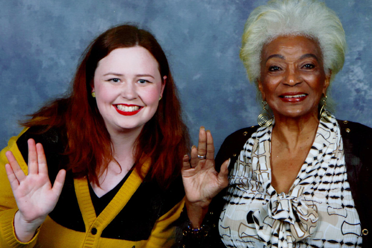
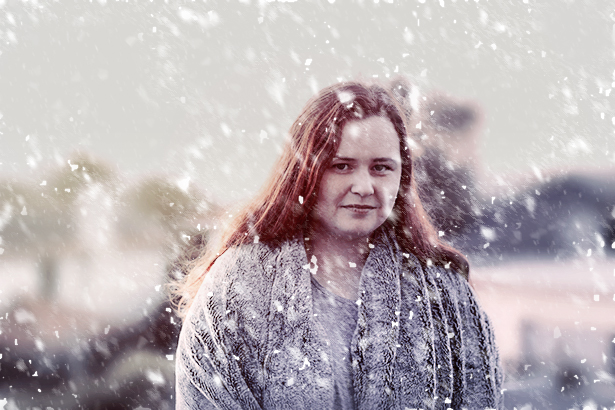

Who I Am
- Front-End Web Developer based in New Zealand.
- Formerly trained 2017, self-taught since 2008.
- I build high-quality, responsive websites in HTML, CSS and JavaScript.
Skills
- Proficient in HTML and CSS (with Sass).
- Working knowledge of jQuery and JavaScript and version control using Git.
- Experience in working in the command line interface and Gulp for development workflow and Asana for project management.
- Expert knowledge of Photoshop as well as a working knowledge of Sketch and Illustrator for bringing designs to life before leaping into code.
- Experience with other frameworks, CMS and languages include; Bootstrap, SEO, npm, JSON, Wordpress, WooCommerce, PHP, Python and Jekyll.
My Values
- Finding a good balance of aesthetics and speed in design.
- Responsive, mobile-first design is key to ensuring an enduring project, accessible to everyone.
- Good user experience ensures repeat customers; both for the designer and the client.
- Communication, understanding, compassion and teamwork is key to the long-term success of any project.
Where Do I Fit In?
Here on 21st Century Earth, I'm a Front-End Web Developer keen to learn from your engineering team. I make okay cups of coffee, great cups of tea (earl grey, hot) and will whip your ass at Mario Kart 64. However, if I was from any of the numerous other multiverses, this is where I'd belong;
- 
If I joined Starfleet, I'd be in Command, possibly piloting a starship somewhere. (Also this one time, I was in the same room as Nichelle Nichols and it made my life.)
- 
If I were born in Westeros, I'd be in House Stark. Emotionally motivated, loyal to my friends, sometimes reckless, and constantly complaining about the impending cold weather.
-
And let's face it. Everyone likes to think they'd be the bad-ass wisecracker zombie killer at the end of the world... but I'd definitely go within the first few hours and be a zombie from then on. I just couldn't hack it without wifi.
-
And yeah, I know you don't make a Harry Potter game (yet) but I feel it's important you know that I am 110% Hufflepuff.